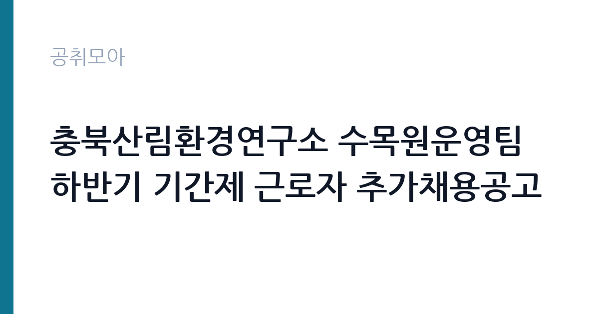

[지자체] 충북산림환경연구소 수목원운영팀 하반기 기간제 근로자 추가채용공고
충청북도 산림환경연구소 · 충북 · 마감 2026-11-05 (D-6) · 출처 나라일터

한눈에 보는 모집 조건
| 기관 | 충청북도 산림환경연구소 |
|---|---|
| 공고명 | 충북산림환경연구소 수목원운영팀 하반기 기간제 근로자 추가채용공고 |
| 고용형태 | 기간제 |
| 근무지 | 충북 |
| 게시일 | 2026-10-30 |
| 마감일 | 2026-11-05 (D-6) |
지원자격, 이렇게 읽으세요
- 기간제근로자 4명
- 접수 ~2026-11-05 마감
- 세부 조건은 원문 공고문 확인
기간제 근로자는 근로계약 기간이 정해진 신분입니다. 계약 기간과 갱신 가능 여부가 근로계약서에 명시되며 기간 만료 시 근로관계가 종료됩니다. 결원 보충이나 특정 사업 기간에 맞춰 채용되는 경우가 많아 업무 범위가 명확합니다. 이번 공고는 충청북도 산림환경연구소에서 직접 진행하는 자체 전형으로, 응시자격과 제출서류는 공고문에 항목별로 제시됩니다. 환경관리 직무는 학력과 경력을 크게 보지 않는 대신 건강 상태와 근무 지속 가능성을 확인합니다. 장비를 들고 계단과 화장실을 오가야 하므로 허리와 무릎 상태가 실질적인 조건입니다. 관련 경력자나 지역 거주자를 우대하는 조항이 붙기도 합니다. 국가공무원법상 결격사유 조회가 공통으로 적용됩니다. 서류는 접수 마감 이후 보완이 되지 않으므로 자격 요건과 증빙 서류를 마감 전에 모두 갖춰야 합니다. 공고문에 명시된 우대 사항은 해당 여부를 확인해 증빙을 첨부해야 가점이 반영됩니다. 공고문의 응시자격 표를 보면 자격 항목이 여러 줄로 나뉘어 있으므로, 각 줄을 하나씩 체크하며 본인 해당 여부를 표시해 두면 누락을 줄일 수 있습니다.
이 공고의 포인트
이 공고의 첫 번째 포인트는 고용 형태입니다. 계약 기간이 정해져 있어 근무 종료 시점이 명확합니다. 그만큼 짧은 기간에 어떤 실적을 남길지가 중요해집니다. 두 번째는 업무 범위가 명확하다는 점입니다. 환경관리 직무로 채용되므로 배치 이후 담당 업무가 크게 흔들리지 않습니다. 세 번째는 근무지입니다. 충북 지역 근무로 수도권 공고에 비해 지원자 분포가 넓지 않아 상대적으로 경쟁이 분산되는 경우가 있습니다. 선발 절차가 단순한 편이어서 서류와 면접 준비에 집중할 수 있습니다. 같은 직무 공고 중에서는 접수 마감이 가장 빨라 일정을 앞당겨 잡아야 합니다. 다만 선발 인원이 4명으로 많지 않아 자격을 갖춘 지원자가 몰리면 경쟁률이 높아질 수 있습니다.
전형은 어떻게 진행되나
서류전형과 면접전형 외에 직무수행능력 평가가 붙는 경우가 있습니다. 평가 방식은 공고문에 구체적으로 적혀 있으므로 어떤 항목에 배점이 높은지 먼저 파악하십시오. 면접에서는 지원 동기보다 실제 업무 경험에 대한 질문이 많고, 답변의 구체성이 평가를 가릅니다. 전형 일정은 서류 마감 이후 빠르게 진행되므로 연락 가능한 번호를 정확히 기재하고 문자와 메일을 수시로 확인해야 합니다. 최종 단계에서는 결격사유 조회와 신체검사가 진행됩니다. 면접조 편성과 대기 시간이 공지되므로 당일 도착 시간을 여유 있게 잡으십시오.
원문에서 확인한 전형 방식
충청북도 산림환경연구소에서는 미동산수목원 운영을 위한 기간제근로자를 다음과 같이 채용 공고합니다. 1. 모집인원: 4명 2. 접수기간: 2026년 10월 30일(금) ~ 11월5일(목) 18:00 까지 3. 접수방법: 방문,이메일,우편접수(평일 근무시간내 09:00~18:00) *우편 및 이메일 접수기간 최종일18:00까지 도착분에 한 함 4. 접 수 처: 충청북도 산림환경연구소 산림환경과 수목원운영팀 (충청북도 청주시 상당구 미원면 수목원길51) 5. 면접일시: 2026년 11월 9일(월) 14:00 ※신분증 필히 지참 6. 면접장소: 산림환경연구소 산림교육센터 강의실 7. 합격발표: 2026년 11월 10일(화) /개별유선통보 8. 제출서류: 채용응시원서,개인정보동의서 등 공고문 붙임파일 서류 각1부 *기타 자세한 사항은 첨부파일 및 충청북도 산림환경연구소 수목원 운영팀(043-220-6122) 으로 문의하시기 바랍니다.
이런 분께 추천해요
- 장기간 성실하게 근무할 수 있는 분
- 신체 활동에 무리가 없는 분
- 위생 관리 절차를 지킬 수 있는 분
지원 전 체크리스트
- 응시자격 요건과 경력 기준을 충족하는가 — 경력은 증명서로 입증해야 합니다
- 계약 기간과 근무 시작일·종료일을 확인했는가
- 제출서류 목록을 모두 준비했는가 — 누락 시 서류 단계에서 탈락합니다
- 접수 마감 2026-11-05 이전에 접수 방식을 확인해 제출했는가
모집 일정과 제출 타이밍
접수 마감은 2026-11-05이고 공고는 2026-10-30에 게시되었습니다. 준비 기간 6일 안에 서류 작성, 증빙 발급, 접수를 모두 마쳐야 하므로 주말을 포함해 일정을 미리 나누는 것이 좋습니다. 특히 경력 기술서나 직무수행계획서를 요구하는 공고는 작성에 시간이 걸리므로 첫날 초안을 잡으십시오. 서류 합격자 발표와 면접 사이 간격이 짧은 경우가 많아 면접 예상 질문은 서류 제출 전에 정리해 두는 편이 유리합니다. 마감 직전에는 접속이 몰리므로 여유를 두고 제출하십시오. 제출 서류는 공고문에 적힌 순서대로 정리하면 담당자가 확인하기 쉬워 누락이 줄어듭니다. 충북 근무지는 연구기관과 공공시설이 분산되어 있어 근무지 위치를 구체적으로 확인하십시오. 마감까지 일주일 안팎이 남아 서류 준비와 증빙 발급을 병행해야 합니다. 선발 인원이 소수라 면접에서 변별력이 크게 작용하는 전형입니다.
직무 이해하기: 지자체
지방 산림환경연구소는 산림 자원 연구와 수목원 운영, 산림 병해충 조사 같은 업무를 담당하는 지자체 소속 기관입니다. 수목원운영팀은 식물 자원 관리와 전시원 정비, 관람객 안내, 계절별 식재·전정 작업을 맡습니다. 봄·가을 성수기와 행사 시기에 업무가 집중되고, 야외 작업이 많은 직무입니다. 기간제 인력은 사업 기간에 맞춰 채용됩니다. 환경관리 업무는 시설의 청결과 위생, 폐기물 처리를 담당합니다. 건물 내부와 외부 구역을 순찰하며 청소 상태를 점검하고, 폐기물 분리 배출과 수거 일정을 관리합니다. 소독과 방역 작업을 진행하고 사용한 약품과 장비를 기록합니다. 행사나 이사 같은 특수 상황에서는 추가 작업이 발생합니다. 공무직 환경관리사는 단순 청소를 넘어 위생 관리 기준을 지키고 작업 일지를 남기는 역할까지 맡습니다. 업무는 혼자 처리하기보다 부서 단위로 나눠 진행되므로 담당 구역과 협업 범위를 입사 초에 확인하는 것이 중요합니다. 직무 교육은 입사 후 기관 자체 계획에 따라 진행되므로 사전 경험이 없어도 시작할 수 있습니다.
자기소개서 작성 팁
지원서는 구체적인 생활 경험이 효과적입니다. 이전 근무지에서 위생 관리를 맡았던 경험, 장비를 다뤄본 경험을 적으십시오. 장기 근무 의사와 출퇴근 가능성을 분명히 쓰고, 체력 관리 방법을 한 줄 덧붙이면 신뢰를 줍니다. 문항별 글자 수 제한을 먼저 확인하고, 각 문항의 첫 문장에 결론을 배치하는 방식이 읽기 쉽습니다. 지원 동기는 기관의 어떤 사업에 기여하겠다는 한 문장으로 시작하고, 이어서 본인의 경험을 근거로 붙이십시오. 감점을 피하려면 다른 기관에 보낼 수 있는 범용 문장을 그대로 쓰지 않는 것이 중요합니다. 기관 이름과 사업명이 문장 안에 자연스럽게 들어가야 준비도가 드러납니다.
면접 준비 포인트
면접에서는 성실성과 근무 지속 의사를 확인합니다. 힘든 작업을 오래 할 수 있는지, 위생 관리 기준을 어떻게 지켜왔는지 묻습니다. 함께 일하는 사람과 역할을 나누는 방식도 평가 요소입니다. 출퇴근 시간을 지킬 수 있는지가 실질적인 판단 기준이 됩니다. 답변은 상황, 판단, 조치의 순서로 정리하면 전달이 분명해집니다. 모르는 질문에는 모른다고 밝히고 확인 방법을 제시하는 편이 억지 답변보다 낫습니다. 마지막에는 근무 의사와 함께 2026-11-05 이후 일정에 언제든 응할 수 있다는 점을 전달하십시오. 마지막 질문 시간에는 근무 조건에 대한 확인 사항을 한 가지 정도 준비해 가면 성실성이 드러납니다.
급여·근무조건 읽는 법
충청북도 산림환경연구소의 구체적인 보수 수치는 이 공고 원문의 처우 항목과 보수표에서 확인해야 합니다. 공시 자료로 확인되지 않은 금액은 이 글에서 추정해 제시하지 않습니다. 알리오 2025년 결산 공시 기준 공공기관 전체 일반정규직 1인당 평균보수는 7,376만 9천원, 신입사원 평균초임은 4,031만 6천원입니다(무기계약직 미포함). 공무직 환경관리 보수는 기관 임금표의 기본급에 정액급식비·명절휴가비 등이 더해지는 구조입니다. 무기계약 신분이면 정년까지 근무가 가능하고 매년 임금이 조정됩니다. 2026년 적용 최저임금은 시급 10,320원, 월 환산 2,156,880원(주 40시간·209시간 기준)입니다. 고용노동부 고시 제2025-47호로 확정된 금액입니다. 공고문에 금액이 제시되지 않은 항목은 원문 보수표나 처우 설명에서 확인해야 하며 확인되지 않은 수치는 쓰지 않는 것이 원칙입니다. 비교할 때는 월 급여뿐 아니라 상여·명절휴가비·복지포인트·초과근무수당까지 포함한 연간 총액으로 계산하십시오. 기간제라면 계약 기간 동안의 총액을, 무기계약이라면 호봉 상승과 정년까지의 누적 소득을 기준으로 판단하는 편이 정확합니다.
자주 묻는 질문
- 선발 인원은 몇 명인가요?
공고문 기준 4명입니다. 직종별로 인원이 나뉘는 경우가 있으니 모집분야 항목을 함께 확인하십시오. - 근무지는 어디인가요?
충북 지역의 충청북도 산림환경연구소 소속 근무지입니다. 세부 주소와 출퇴근 조건은 원문 공고문에서 확인할 수 있습니다. - 보수는 얼마인가요?
채용 신분(기간제)과 기관 임금 규정에 따라 정해지며 구체적인 금액은 공고문 처우 항목에 제시됩니다. 금액이 공개되지 않은 경우에는 원문의 보수표를 확인하십시오.
함께 보면 좋은 공고
[지자체] 2026년 상록수보건소장(개방형직위) 임용시험 시행계획 2차 재공고 — 마감 2026-11-16[지자체] 2026년 제5회 김포시 임기제공무원 임용시험 공고 — 마감 2026-11-12[지자체] 2026년도 제3회 나주시의회 임기제공무원(시간선택제임기제 라급) 임용시험 시행 공고 — 마감 2026-11-12출처: 나라일터 공개정보를 바탕으로 공취모아가 정리한 안내글입니다. 모집 조건·일정은 변경될 수 있으니 지원 전 반드시 원문 공고문을 확인하세요. 본 글은 정보 제공용이며 합격을 보장하지 않습니다.